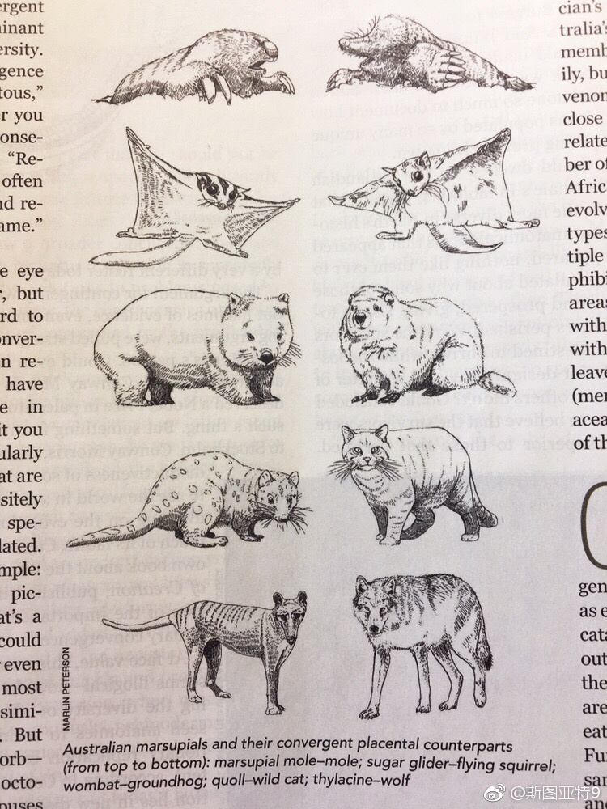

斯图亚特9
2017-09-02
推荐一下一个高中同学的文章《生活在别处》：
生活在别处 ∣ 外星人(续)
最近互联网开始流行“生活在别处”这句话。这话到底什么意思，褒义还是贬义？跟“生活不只是眼前的苟且，还有诗和远方”是一个意思吗？
斯图亚特9
2017-09-02
既然研制出了旅行者号探测器，为什么只生产发射了两个？不多造一些发出去？
斯图亚特9
2017-09-02
澳大利亚几种有袋类动物和与它们趋同的普通哺乳动物。有的学者认为趋同进化比我们想象要普遍得多。

 生活在别处 ∣ 外星人(续) 最近互联网开始流行“生活在别处”这句话。这话到底什么意思，褒义还是贬义？跟“生活不只是眼前的苟且，还有诗和远方”是一个意思吗？
生活在别处 ∣ 外星人(续) 最近互联网开始流行“生活在别处”这句话。这话到底什么意思，褒义还是贬义？跟“生活不只是眼前的苟且，还有诗和远方”是一个意思吗？